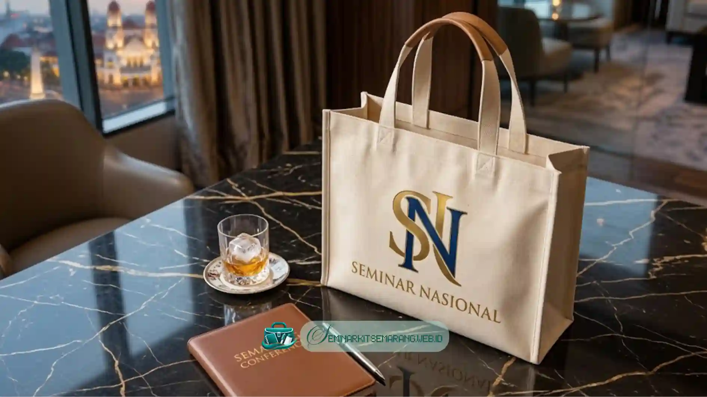

Apa Itu Tas Blacu dan Kenapa Cocok untuk Seminar?
Tas blacu adalah tas berbahan kain katun kasar bertekstur alami yang sering dipilih untuk
souvenir karena tampilannya sederhana namun terkesan rapi dan ramah lingkungan.
Kain blacu berasal dari serat katun yang belum diproses secara halus sehingga permukaannya
sedikit kasar dan berwarna krem alami. Karakteristik ini membuatnya mudah dikombinasikan
dengan berbagai teknik cetak, mulai dari sablon manual hingga digital printing.
Untuk acara seminar, tas seminar ini biasanya digunakan sebagai wadah
materi peserta
seperti buku panduan, alat tulis, atau merchandise lain di paket seminar.
Dibandingkan tas plastik atau tas berbahan sintetis, tas blacu umumnya lebih tahan lama
sehingga
berpotensi dipakai ulang oleh peserta setelah acara selesai. Hal ini menjadikannya
pilihan yang
dianggap lebih berkelanjutan sekaligus berfungsi sebagai media promosi jangka panjang.
Penggunaan tas blacu untuk seminar juga fleksibel dari segi anggaran. Panitia dapat
menyesuaikan
ukuran, model, dan jumlah sablon sesuai kebutuhan tas custom,
baik
untuk seminar skala kecil maupun acara korporat berskala besar.

Bagaimana Cara Memesan Tas Blacu Custom di Semarang?
Cara memesan tas blacu custom di Semarang umumnya dimulai dengan menentukan desain,
memilih
vendor, lalu melakukan konfirmasi ukuran dan jumlah sebelum proses produksi berjalan.
Berikut tahapan umum yang biasa dilalui saat memesan:
- Menentukan konsep desain. Panitia menyiapkan logo dan tema warna.
- Memilih model dan ukuran tas, seperti tas jinjing atau tote bag.
- Berkonsultasi dengan vendor konveksi mengenai teknik sablon.
- Menyepakati jumlah pesanan dan tenggat waktu penyelesaian.
- Melakukan pengecekan sampel sebelum pesanan massal dicetak.
- Konfirmasi akhir dan pembayaran untuk menjadwalkan produksi.
Vendor Seminar Kit Semarang melayani pemesanan baik untuk kebutuhan mendesak
maupun terjadwal, namun disarankan memesan jauh hari.
Apa Saja Faktor yang Memengaruhi Harga Tas Blacu Seminar?
Harga tas blacu seminar dipengaruhi oleh jenis kain, ukuran tas, teknik sablon yang digunakan,
serta jumlah unit yang dipesan ke vendor pembuat souvenir.
Beberapa faktor utama yang biasa memengaruhi harga antara lain:
- Jenis dan ketebalan kain blacu yang digunakan sebagai bahan utama.
- Ukuran tas, dimana semakin besar membutuhkan material lebih banyak.
- Teknik sablon yang digunakan (misal satu warna vs full color).
- Jumlah pesanan, semakin banyak harganya umumnya lebih efisien.
- Tambahan aksesori seperti resleting, perekat, atau kantong dalam.
Harga pasti sebaiknya dikonfirmasi langsung ke vendor berdasarkan spesifikasi desain yang
diinginkan agar sesuai dengan anggaran acara.
Bagaimana Memilih Vendor Tas Blacu Terpercaya di Semarang?
Memilih vendor tas blacu terpercaya di Semarang dapat dilakukan dengan memeriksa
portofolio,
kualitas bahan, kejelasan estimasi waktu, dan kemudahan komunikasi.
Vendor yang berpengalaman umumnya dapat menunjukkan hasil kerja yang konsisten dan
memberikan
rincian biaya yang transparan untuk tas seminar pesanan Anda.
Pastikan juga meminta contoh kain sebelum pemesanan massal untuk memastikan kesesuaian
dan
melihat testimoni dari klien yang sebelumnya pernah memesan di vendor tersebut.
Apa Kesalahan Umum yang Perlu Dihindari Saat Memesan Tas Blacu Seminar?
Kesalahan umum saat memesan tas blacu seminar meliputi pemesanan mendadak, desain
yang kurang
jelas, dan tidak melakukan pengecekan sampel sebelum produksi massal.
Memesan terlalu mendekati hari H menyulitkan vendor menyesuaikan jadwal. Mengabaikan
resolusi
desain membuat sablon kurang maksimal dan terkesan buram di kain.
Selalu perhatikan kapasitas tas dan panjang tali agar nyaman dipakai peserta seminar,
terutama
jika isinya dilengkapi blocknote dan pulpen tebal.
Dengan perencanaan yang matang, tas blacu dapat menjadi souvenir Seminar Kit Semarang
yang fungsional sekaligus berkesan bagi seluruh peserta acara Anda.